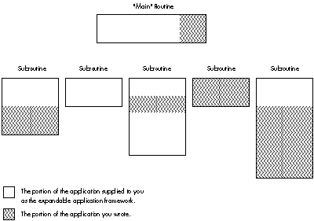
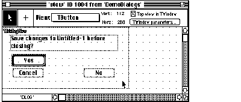
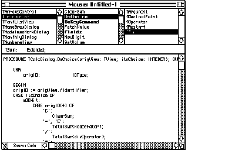
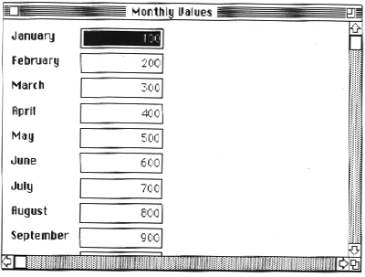
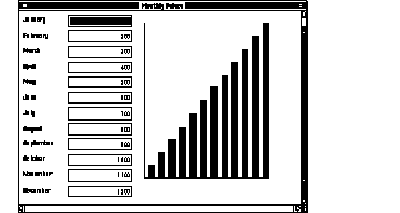

Using MacApp, Apple's object-based application framework, saves time and effort for
programmers, and results in an application with the authentic Macintosh look and feel.
Developing a Macintosh application can become a simple matter of selecting and
integrating functionally specific routines with MacApp and letting MacApp take care of
the user interface and other standard application behavior, as this article shows.
Wouldn't it be nice if you could develop a Macintosh application using previously
existing routines? Think of the time and effort you could save if you were able to
integrate functionally specific routines from an application you'd written for another
platform. Or if you were able to obtain such routines from a public source and use
them in your Macintosh application. Or if you could develop such routines yourself, in
a language of your choice, and then use them in multiple applications.
And wouldn't it be nice if you had available to you libraries of routines that did the
tedious work of creating the interface Macintosh users have come to expect? You
wouldn't have to spend time and effort making sure your application did all the things a
well-behaved Macintosh application should do.
Dream no more. MacApp makes all of this possible.
MacApp is an application framework--a skeletal structure for a program that must be
fleshed out before it is useful. The bones of this skeletal structure are the MacApp
libraries, which handle standard application behavior such as initialization; accessing
documents; managing user interface components, such as windows, buttons,
scrollbars, and text; managing memory; and handling user input. You flesh out this
skeleton by adding functionally specific routines and application-specific code. Figure
1 shows how these pieces fit together.

Figure 1. How MacApp Relates to Your Application
Because of Apple's commitment to MacApp, the MacApp libraries have been maintained
and have matured over time. This has produced libraries that are both versatile,
having been used in many applications to address a variety of needs, and robust,
because they've been tested and debugged in hundreds of applications and on a wide
variety of Macintosh configurations. You can use the code as is or modify pieces that
don't meet your needs exactly.
The MacApp libraries are written in Object Pascal, and are distributed via APDA along
with interfaces in Object Pascal and C++. Also, p1 Modula-2, Version 4.1, an object
language based on Modula-2 now available from the MacApp Developer's Association is
fully compatible with MacApp 2.0 and includes interfaces to the MacApp libraries.
MPW allows you to develop in Object Pascal, C, C++, FORTRAN, and Modula-2 and
still get the benefits of MacApp.
MacApp can speed your application development process and help you create more
robust applications for the Macintosh. Specifically, MacApp manages the user
interface, handles events, implements memory management services, manages
printing services, provides basic debugging services, and gives you high-level access
to code via Mouser. In addition, when you use MacApp, a number of support
organizations and class libraries are available to you. We'll take a closer look at each
of these benefits.
Manages the user interface. Macintosh users are a demanding audience, having
grown accustomed to the Macintosh's distinctive look and feel. Apple has explicitly
defined the elements of this look and feel in its Human Interface Guidelines, available
from APDA. If your application is to succeed, it must conform to these guidelines. The
most significant benefit of using MacApp as your application framework is that it
provides for all aspects of Apple's Human Interface Guidelines. MacApp handles user
interaction, creates draggable, resizable windows, supports pull-down menus, and
provides default behavior for a number of contingencies.
Furthermore, MacApp ships with a tool called ViewEdit that enables you to graphically
manipulate and edit the user interface aspects of your software, such as the location,
size, and text of buttons and scrollable lists. Creating a dialog box with various
controls becomes a simple matter of sketching out these items much as you would
sketch a drawing with MacDraw. Figure 2 shows the ViewEdit editing window from the
DemoDialogs example that comes with MacApp, offering the programmer the chance to
edit the Save As dialog.

Figure 2. Editing the Save As Dialog in the ViewEdit Window
Handles events. User interaction produces events that an application gets through
the Main Event Loop. Programming this code from scratch is both time-consuming and
difficult. MacApp frees you from this requirement, managing the extensive code to
handle events and dispatching them accordingly.
Implements memory management services. The most difficult part of
Macintosh programming, as veteran Macintosh programmers will attest, is careful
memory management. Memory management services are fully implemented in MacApp,
along with support for failure notification and a simple but elegant mechanism for
recovering from failure conditions, such as a memory allocation failure in
low-memory situations.
Manages printing services. Most Macintosh applications require some degree of
printing services. Writing good printing code is difficult and demanding. MacApp
makes the job of providing printing capabilities in an application easy, freeing most
developers from the necessity of writing even a single line of printing code. MacApp's
generalized printing model correctly manages most printing needs. It provides support
for monochrome and color printing and for the print dialog boxes, and provides a
default notification when the application is busy printing.
Provides basic debugging services. Debugging is always a chore. But MacApp
eases this chore by supplying a built-in debugger that provides basic debugging
services, such as a notification each time a code segment is loaded, and a built-in
inspector that allows you to inspect your objects dynamically. Also, SADE 1.1,
Apple's standard debugging environment and an excellent debugging tool, supports
source code debugging of MacApp applications.
Gives you high-level access to code via Mouser. MacApp ships with a tool
called Mouser that allows you to access both the MacApp libraries and your source code
by class, method, and field. For details, see the sidebar "About Mouser" by Mary
Boetcher, author of Mouser.
Makes support organizations available to you. When you program for the
Macintosh, you can turn to a number of organizations for support. The MacApp
Developer's Association (MADA) provides regular newsletters, source code disks, and
MacApp tools for developers. Also, a large developer group address on AppleLink called
MacApp.Tech$ provides quick answers to technical questions. Many of MacApp's
current and former engineers appear on this group address to answer questions.
Makes class libraries available to you. Last but not least, if you program with
MacApp, you can use existing class libraries from a variety of sources. MacApp comes
bundled with five fully functional demo applications in Object Pascal and three in C++.
Code can be copied and pasted from these examples into your application. MADA
maintains a catalog of powerful classes that are available for purchase, such as an
offscreen-imaging unit to improve graphics rendering, a database unit to integrate
database capabilities into your application, and several more.
by Mary "Mouser Woman" Boetcher
Mouser is a browser, a program for viewing and editing source code files.
The difference between a browser and an editor is that the browser "knows" something
about the structure of the language and/or development system the code is written in.
Mouser knows about the structure of Object Pascal and C++ programs, and can use
this information to allow you to quickly navigate among the classes and methods of a
program. The leftmost pane of the browser window displays a list of the program's
classes. Clicking on a class name brings up lists of the class's methods and fields. You
can then click on a method or field name to see its source code.

Figure 3 Mouser Provides High-level Access to code
You can get a list of
You can also find out
Mouser provides a number of commands for getting information about your program.
What if there's something your application needs to do slightly differently from the
MacApp libraries? The fact that these libraries are written in an object-based
language (Object Pascal) means that you can easily modify the pieces of the libraries
that don't exactly meet your needs. (If you're not familiar with object programming,
and words like object, class, subclass, superclass, method, andinheritance mean
nothing to you, you might want to consult the section entitled "Basic Concepts of the
Object-Based Approach" in Brian Wilkerson's article "How to Design an Object-Based
Application" in this issue for help in understanding the next couple of paragraphs.)
Suppose, for example, you want to add a Preferences item to the standard File menu
supported by MacApp. In MacApp, the TApplication.DoMenuCommand method (or
member function, in C++ terminology) handles the standard menu items (those
creating a new document, opening a document, quitting the application, and so on). In
your subclass TMyApplication of the MacApp class TApplication, you define a
method that will override the inherited DoMenuCommand method to handle the case
where the user selects Preferences from the File menu. If the item the user selects
from the File menu is not Preferences, then your method simply calls the inherited
version of the method so TApplication can handle the menu selection.
The following simple method allocates a Preferences command object if Preferences is
chosen from the File menu, and otherwise calls the inherited version of the method:
FUNCTION TMyApplication.DoMenuCommand(aCmdNumber: CmdNumber):
TCommand; OVERRIDE;
VAR aPreferencesCommand: TPreferencesCommand;
BEGIN
DoMenuCommand := NIL;
CASE aCmdNumber OF
cPreferences:
BEGIN
New(aPreferencesCommand);
FailNil(aPreferencesCommand);
aPreferencesCommand.IPreferencesCommand(aCmdNumber);
DoMenuCommand := aPreferencesCommand;
END;
OTHERWISE
DoMenuCommand := INHERITED DoMenuCommand(aCmdNumber);
END; { CASE aCmdNumber }
END; { TMyApplication.DoMenuCommand }
Note that for this example to work, you would also have to add the Preferences item to
the cmnu resource of the application, and override DoSetupMenus in TMyApplication
to enable the menu item.
While MacApp will save you time and effort in the long run, you must invest time and
effort up front to learn how to use it. If you are new to the Macintosh, you face two
steep learning curves: first learning the Macintosh (the Toolbox, operating system,
and user interface) and then learning MacApp. Learning MacApp also requires learning
object programming.
But don't let this discourage you. Apple Developer University offers excellent
introductory courses on the Macintosh programming environment and on MacApp.
These courses make the learning process easier and provide programming labs in
which you can immediately apply what you learn. Furthermore, using Mouser to
browse the MacApp classes can help speed your learning. Finally, the MacApp example
applications are a rich source of ideas and examples of how to implement a wide
variety of features. And by the end of this article, if you read the next section carefully
and try the exercise I lead you through, you will already have some familiarity with
MacApp.
Now that you know what MacApp can do for you, and what you must do for MacApp, let's
look at an example of how you might use MacApp to develop an application that
integrates previously existing routines.
Say we want to develop a database package for the Macintosh based on an application
we've developed for another platform. The application has many capabilities that we
can reuse (such as b- tree creation and management, graphing, searching, and
sorting) and some capabilities that we should not use (such as window management and
data entry screens). In this example we'll focus on reusing the graphing capability.
The source code for the graphing capability is in two files of graphics routines written
in C. We've been careful in the design of our graphics routines, ensuring that they
make no assumptions about their environment, such as graphics parameters or
hardware attributes. For example, the routines avoid drawing and instead have an
interface that describes what should be drawn. This lets the application that uses the
routines determine how the drawing should occur.
We start, then, with our graphics routines. We will create a class that encapsulates
the services offered by these routines. Then, you will learn step by step how to
seamlessly integrate this code into a MacApp sample application, using MPW.
START WITH YOUR ROUTINES
Our graphics routines reside in a set of two files: Graph.h, which contains the
interfaces to the routines, and Graph.c, which contains the source to the graphics
routines. You'll find a complete listing of these files on develop, the disc.
For this example, these files reside on the Macintosh. In your case, the files you want
to use may reside on another platform. To transfer your files to the Macintosh, you
should consider either a disk transfer or a file transfer. A disk transfer, to transfer
the files from another disk, is best accomplished with a utility such as Apple File
Exchange. A file transfer is best accomplished with either a terminal emulator, to
download the file using standard file transfer protocols, or a file server, such as
AppleShare, to access the other platform over AppleTalk and transfer the files.
Now I'll point out selected features of our files Graph.h and Graph.c.
The header file Graph.h contains some type and constant declarations, including the
following:
#define kMaxPoints 20 /* Maximum number of points we support. */
This file also contains some type definitions, like these:
typedef enum {kBar, kStackedBar, kPie, kLine} GraphType;
/* These are the kinds of graphs that the graph routines support;
only the bar graph is implemented for this example. */
typedef GraphValue GData[kMaxPoints-1];
/* Zero-based array of points. */
typedef struct {
GraphType thisGraph; /* Type of graph it is. */
short numPoints; /* Number of points in this graph. */
short top;
short left;
short bottom;
short right; /* The graph's rectangle with respect */
/*to which our graph is computed. */
short graphYMax; /* The graph's maximum Y coord value. */
short graphYMin; /* the graph's minimum Y coord value. */
/* Use these to scale the graph. */
GData graphItems; /* The data points in the graph. */
} GraphStruct, *GraphStructPtr;
Finally, Graph.h also contains some function declarations, such as:
GraphStructPtr DoGraphInit( GraphType whichGraphType );
void DoGraphSetGraphRect( short top, short left, short bottom,
short right, GraphStructPtr graphStorage );
void DoGraphSetPoint( short which, short value,
GraphStructPtr graphStorage );
The actual routines are implemented in Graph.c. Here's a sample from this file:
GraphStructPtr DoGraphInit( GraphType whichGraphType )
{
GraphStructPtr graphStorage = 0;
short counter;
GraphValue aGraphValue;
if (!(graphStorage =
(GraphStructPtr) malloc(sizeof (GraphStruct))))
return 0; /* Error... */
switch ( whichGraphType ) {
case kBar:
graphStorage->numPoints = graphStorage->top =
graphStorage->left = graphStorage->bottom =
graphStorage->right = graphStorage->graphYMax =
graphStorage->graphYMin = 0;
for (counter = 0; counter graphItems[counter];
aGraphValue.whichOne = aGraphValue.value =
aGraphValue.top = aGraphValue.left =
aGraphValue.right = aGraphValue.bottom = 0;
}
break;
case kStackedBar:
case kPie:
case kLine:
/* These are unsupported in this version. */
break;
}
return graphStorage;
}
CREATE A CLASS TO ENCAPSULATE SERVICES
We next encapsulate the services of our graphics routines in a C++ class. To do this
requires changes to our header. We modify our header files by surrounding our
function declarations with the extern"C" directive as follows:
#ifdef __cplusplus
extern "C" {
#endif
// Function declarations go here, for example:
GraphStructPtr DoGraphInit( short graphType );
// and so on.
#ifdef __cplusplus
}
#endif
This ensures that when CFront, the C++ preprocessor, reads in this header, it won't
mangle the names of our C routines.
Next we create a "wrapper object" for these routines. In essence, this is a class that
can be used to define objects that provide all the services of the graph routines. This
class can then be used in a MacApp application. Such a class can be defined in Object
Pascal or C++. In this example, we'll create a class in C++ that provides the services
of the graph routines.
To create the C++ wrapper object--TGraph--for our graph routines, we make two
new files: UGraph.h and UGraph.cp (following MacApp's naming convention). The first
file contains the class definition, and the second contains the class implementation. See
develop, the disk, for a complete listing of these two files.
Creating these files is a three-step procedure, as follows:
#ifndef __UGRAPH__
#define __UGRAPH__
// * Auto-Include the requirements for this unit's
interface.
#ifndef __UMacApp__
#include "UMacApp.h"
#endif
#include "Graph.h"
// The interface to this class goes here.
#endif
This allows the MPW C++ compiler to perform at its best by only making it
do the work to include this unit's interface (and the requirements for this
unit's interface) when it's not already included.
TGraph and put the definition in
To do this, we must choose which class TGraph will descend from. Since
graphs are things that are drawn on the screen and are viewed, we decide to
make the graph class descend from MacApp's TView class. Ideally, we would
create a generalized base class for a graph, such as TGraph descended from
TView, and then create specialized subclasses of TGraph for the various kinds
of graphs. A bar graph--TBarGraph--would descend from TGraph; a line
chart-- TLineGraph--would descend from TGraph; and so on. However, to
keep this example simple, we'll make the bar graph class descend directly
from TView.
Here's the class definition we come up with:
class TGraph : public TView {
public:
virtual pascal void IRes(TDocument *itsDocument,
TView *itsSuperView, Ptr *itsParams);
// Initialize the graph view from its resource template.
virtual pascal void SetGraphRect(Rect graphRect);
// Initialize the graph data structure to be the size of
// this view.
virtual pascal void SetPoint( short which, long value );
// Set a point to a value.
virtual pascal short GetNumPoints();
// Return the number of points in the graph.
virtual pascal void ComputeBars(Boolean redraw);
// The graph library computes each of the bars for this
// graph and if redraw is TRUE forces the view to redraw
// itself.
virtual pascal void GetCoordinateRange(Rect *coordRange);
// Return min & max Y coordinates, and min & max X
// coordinates, useful for labeling the axes of the graph.
virtual pascal void Draw(Rect *area);
// Draw the graph.
virtual pascal void Free(void);
// Free the data allocated by this class.
private:
GraphStructPtrfData;
};
There are several things to note about this wrapper object.
First, note that the class functions don't map one-to-one with the graph
routines. Rather, there is an attempt to abstract from the routines various
services available for this class. For example, instead of retrieving the
maximum value of a point on the Y-axis with a call to the routine
DoGraphGetYMax, we abstract from this routine the notion of retrieving the
range of values on both axes (useful in setting up labels on the axes), and
implement the class member function GetCoordinateRange, which retrieves
the range of values on the X- and Y-axes and returns the result in a Rect.
Also note that instead of retrieving a specific bar by calling the
routineDoGraphGetBar, we attempt to hide that activity behind the class
member functionDraw, which simply draws the graph, iterating over all bars
in the bar graph.
And note that since this class descends directly from TView, three member
functions in this class definition override TView's member functions: IRes,
which initializes the view and calls the graph routine to allocate and initialize
the graph data structure; Draw, which does the work of drawing the graph;
and Free, which calls the graph routines to dispose of the graph data
structure.
TGraph in C++. The first thing to add here (after the copyright #ifndef __UGRAPH__
#include "UGraph.h"
#endif
This ensures that the TGraphimplementation "sees" its class definition, as
well as any other necessary definitions. We then list the implementation of the
TGraph class in the body of the file UGraph.cp. The TGraph::IRes member
function implemented in this file might look something like this:
pascal void
TGraph::IRes(TDocument *itsDocument, TView
*itsSuperView, Ptr *itsParams)
{
GraphStructPtr aGraphStructPtr;
Rect aRect;
inherited::IRes(itsDocument, itsSuperView, itsParams);
aGraphStructPtr = DoGraphInit(kBar);
fData = aGraphStructPtr;
aRect = gZeroRect;
if (Focus())
GetQDExtent(&aRect);
SetGraphRect(aRect);
}
This member function initializes the TView object by calling its inherited
IRes member function and then initializes the graph routines by calling
DoGraphInit. This view object then attempts to get information about its
graphics environment and lets the routines set up various values for this
environment.
INTEGRATE THE CLASS INTO AN APPLICATION
At this point, we have a C++ class that encapsulates the services offered by our
graphics routines. To see how you can use this C++ class in a MacApp application, try
the following exercise. In this exercise, you'll modify the C++ version of the
DemoDialogs sample application that comes with MacApp 2.0, by adding a bar graph to
the Monthly Values Dialog. All the files you need are ondevelop, the disc.

Figure 4. The Monthly Values Dialog Before Modification
resource 'view' (cMonthlyDialog, purgeable) {
{
...
}};DialogView from 500 to 600 as follows: 'SCLR', 'DLOG', { 0, 0 }, { 1000, 600 },
;
'DLOG', 'graf', { 25, 300 }, { 300, 300 },
sizeFixed, sizeFixed, shown, disabled,
View { "TGraph" }
This puts a TGraph view in the Monthly Values Dialog and ensures that the
TGraph object is allocated and initialized via its IRes member function when
the dialog is created.
#include files at the#include "UGraph.h"
TMonthlyDialog class:
virtual pascal Boolean DeselectCurrentEditText(void);
pascal Boolean
TMonthlyDialog::DeselectCurrentEditText(void)
{
TGraph *aGraph;
TNumberText *theNumberText;
aGraph = (TGraph *) FindSubView('graf');
for (short which = 0; which fIdentifier ==
gMonthIDs[which]) {
theNumberText =
(TNumberText *) FindSubView(gMonthIDs[which]);
if (theNumberText)
aGraph->SetPoint(which+1,
theNumberText->GetValue());
aGraph->ComputeBars(kRedraw);
break;
}
}
return inherited::DeselectCurrentEditText();
}TGraph class, modify TTestApplication::ITestApplication to include the following variable:
TGraph *aGraph;
and to allocate this variable within the gDeadStripSuppression section at
the end of this function:
if (gDeadStripSuppression) {
...
aGraph = new TGraph;
}TMonthlyDialog::StuffValues as follows:
pascal void
TMonthlyDialog::StuffValues()
{
TGraph *aGraph;
TNumberText *aNumberText;
aGraph = (TGraph *) FindSubView('graf');
for (short i = 0; i
SetValue(gMonthlyValues[i], kDontRedraw);
aGraph->SetPoint(i+1, gMonthlyValues[i]);
}
aGraph->ComputeBars(kDontRedraw);
} OtherLinkFiles = ∂
"{CLibraries}"StdCLib.o ∂
"{ObjApp}UGraph.cp.o" ∂
"{ObjApp}Graph.c.o"
"{ObjApp}Graph.c.o" ƒ ∂
"{SrcApp}Graph.c" ∂
"{SrcApp}Graph.h"
{MAEcho} {EchoOptions} "Compiling: Graph.c"
{MAC} "{SrcApp}Graph.c" ∂
-i "{SrcApp}" ∂
-i "{CIncludes}" ∂
-i "{MACIncludes}" ∂
-o "{ObjApp}Graph.c.o" ∂
{COptions} ∂
{OtherCOptions}
"{ObjApp}UGraph.cp.o" ƒ ∂
"{SrcApp}UGraph.h" ∂
"{SrcApp}Graph.h" ∂
{MacAppIntf}
Figure 5. The Monthly Values Dialog After Modification
You've learned that using MacApp as your framework in developing a Macintosh
application not only enables you to reuse your functionally specific code routines, but
also saves you time and effort by providing standard application behavior. You've also
learned that because the MacApp libraries are written in an object-based language
(Object Pascal), you can easily modify the pieces that don't meet your needs. You've
watched as we've created a class to encapsulate the functionality of an existing group of
routines, and you've gone through the process of integrating this class into a MacApp
sample application. Now you're ready to integrate some of your own code into the
MacApp sample application ondevelop, the disc. With the help of MacApp, you'll soon be
reusing your code in Macintosh applications that present users with the interface they
know and love.
CHRIS KNEPPER is this issue's token beer connoisseur. He's proud that he has
never drunk a Mountain Dew in his life, and never plans to. He received a BSEE/CS
from Stanford in 1984, and since then has worked in a Dickensian industrial sweat
shop (he won't say exactly why or where) and at a small Macintosh consulting firm.
Since he came to Apple in 1986, he has done a variety of jobs including software
testing, developer technical support, and work for Apple Integrated Systems--all the
while consuming record amounts of coffee. When he's not hanging out at local
breweries, he's reading, cycling, rooting for the San Francisco Giants, or playing his
favorite sport. What is it? Hint--he's been saving his pennies for his dream vanity
plate:TNSNE1. . . *
MACAPP, its manuals, and other useful books on MacApp and object programming are
available from APDA. *
Note that whatever work you do with MacApp and Object Pascal is restricted to the
Macintosh, because Apple's implementation of Object Pascal has not been endorsed by
other vendors on other platforms. If you want to eventually use your code on another
platform, consider coding in C++, as C++ compilers are available on other platforms.
Of course, you will need to be careful how you structure your application as it
develops on the Macintosh (and vice versa) to ensure compatibility across hardware
platforms. *
You can contact MADA at P.O. Box 23; Everett, WA; 98206; phone (206) 252-6946;
AppleLink address MADA. To join the AppleLink group address MacApp.Tech$, contact
AppleLink address MacApp.Admin. *